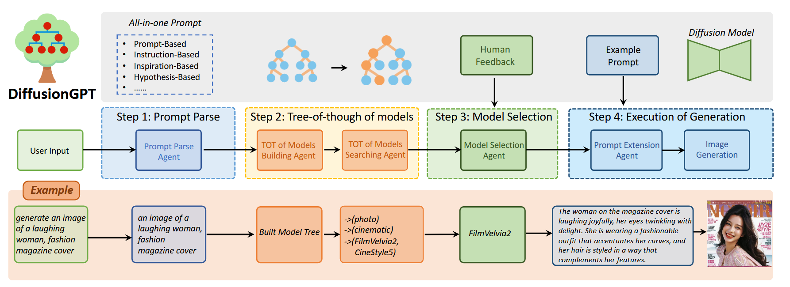

arXiv:2401.10061v1 [cs.CV] 18 Jan 2024
background
Current unified attempts often fall into two orthogonal aspects: i) parse Diverse Prompts in input stage; ii) activate expert model to output.
current stable diffusion models face two key challenges when applied to realistic scenarios:
- Model Limitation: 模型在一些特定的场景下表现不佳
- Prompt Constraint: prompt 类型很多，including instructions and inspirations.
method
When provided with an input, the LLM parses the prompt and employs the Trees-of-Thought to guide the selection of an appropriate model.
Moreover, we introduce Ad⋆Equal contribution. vantage Databases, where the Tree-of-Thought is enriched with human feedback, aligning the model selection process with human preferences.


Step 1：Prompt Parse
作者将prompt分为4类：
- Prompt-based
- Instruction-based
- Inspiration-based (灵感 e.g., Input: “I want to see a beach”; Recognized: “a beach”)
- Hypothesis-based (e.g., Input: “If you give me a toy, I will laugh very happily”; Recognized: “a toy and a laugh face”).
作者在这四类prompt中提取核心内容，同时减少干扰内容的影响。
Step 2：Tree-of-thought of Models of Building and Searching
待选的模型太多，有的模型又很相似，如何选择是一个问题。所以提出了Tree-of-Thought (TOT)，通过树状的搜索，提升了模型选择效率
Constructing the Model Tree using The Tree-of Thought (TOT) of Model Building Agent
输入所有model的标签和属性到Agent中，然后Agent分析和总结model的潜在类别。
通过Subject Domain and Style Domain构造一个两层的树，通过Subject分第一次，Style分第二次。
Searching the Model Tree
广度优先搜索，找到一个匹配prompt的候选模型名单
Step 3：Model Selection with Human Feedback
对于优势数据库，采用奖励模型基于10,000条提示语料库计算所有模型生成结果的分数，并存储评分信息。在接收到输入提示后，我们计算输入提示和这10,000条提示之间的语义相似度，识别出最相似的前5条提示。随后，模型选择代理从离线数据库中检索这些提示每个模型的预先计算性能，为每个选定的提示挑选出前5名模型。该过程会产生一个包含5*5个候选模型的集合。
然后和上面选出来的候选模型名单相交，重点关注具有较高出现概率和相对较高排名的模型。这些模型最终被选择为生成模型的最终选择。
Step 4：Execution of Generation.
Once the most suitable model has been selected, the chosen generative model is utilized to generate the desired images using the obtained core prompts.
Prompt Extension
此代理利用所选模型中的提示示例来自动丰富输入提示。
Experiment
LLM采用ChatGPT的text-davinci-003，使用api的方式使用。
Qualitative analysis
作者用自己的系统整合各种基于SD1.5和SD XL的社区开源模型，然后分别和SD1.5，SD XL生成的图像在Alignment(一致)和Aesthetics(美感)这两个方面做对比，每次对比都采用上文中的四类prompt。
To further evaluate the different generated results, we employed the aesthetic predictor and human feedback related reward model.
Ablation Study
对比这三种情况：
- random select diffusion model
- TOT
- TOT + HF
The random selection is the baseline method for generating images. The TOT or TOT+HF represent the performance of different agents.
Prompt extension
To evaluate the effectiveness of the prompt extension agent, we conducted a comparison between the generation results using the original prompt and the extended prompt as inputs
User Study
从PartiPrompts中随机挑选100个prompts, 每个prompt生成4张图，20个志愿者给四张图排序。然后对比用户的偏好比率。
Limitations and Further works
Although DiffusionGPT has demonstrated the ability to generate high-quality images, there are still several limitations and our future plans are in the following ways:
Feedback-Driven Optimization
We aim to incorporate feedback directly into the optimization process of LLM, enabling more refined pompt parse and model selection.
Expansion of Model Candidates
To further enrich the model generation space and achieve more impressive results, we will expand the repertoire of available models.
Beyond Text-to-Image Tasks
We intend to apply our insight to a broader set of tasks, including controllable generation, style migration, attribute editing, etc.